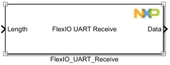
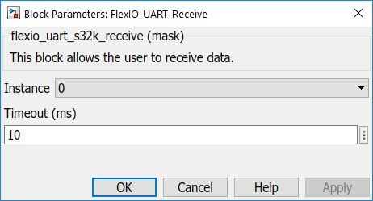

FLEXIO UART Receive Block
This block allows the user to perform a blocking receive operation.
Block Image
Inputs:
- Length - Set receive size, in bytes (UINT32 data type).
Outputs:
- Data - received data (UINT8 vector data type).
Note: You receive a number of bytes equal to Length (input).
Parameters and Dialog Box
The block dialog consists of the following tabs:
General
Instance
Select an instance of flexio to use (must be linked with the Config block).
Note: The Config block linked to this block must have Polling mode selected.
Timeout
Insert timeout value (in ms) for the transfer.
Block Dependency
Block Miscellaneous Details
- None